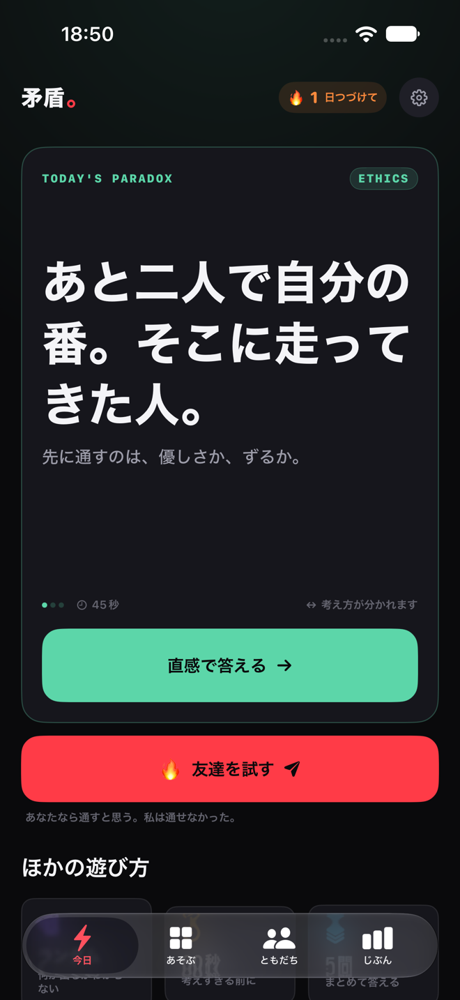
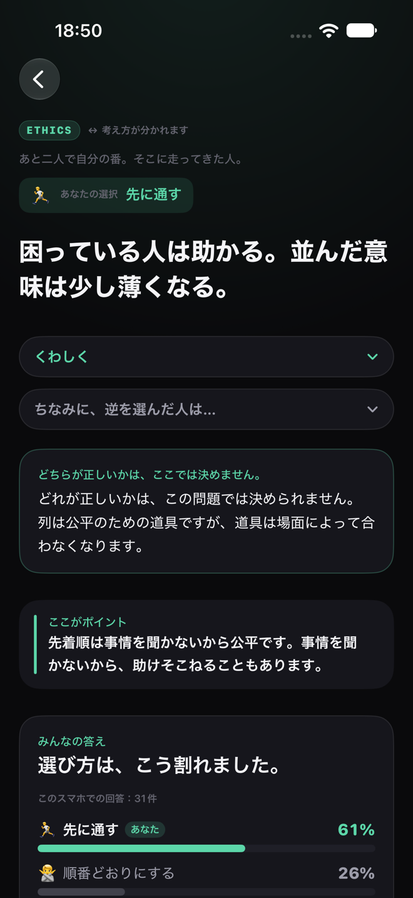
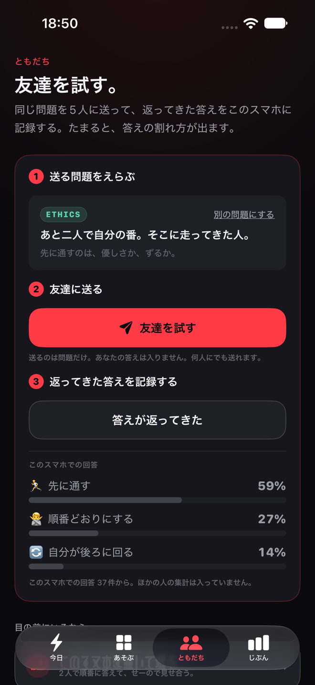

矛盾。
正解のない選択で友達と答えが割れる思考ゲーム
正解のない問題に、直感で答えるだけ。
答えたあとに「え、そうなるの？」があります。
最終更新: 2026年9月18日
iPhone のアプリです。まもなく App Store で公開します
たとえば、こんな問題です
「あと二人で自分の番。そこに走ってきた人。」
先に通すのは、優しさか、ずるか。
選択肢は2つか3つ（まれに4つ）です。考え込む前に、思ったほうを押してください。 押すまで、こちらからは何も言いません。 どちらが多いかも、どんな話につながるかも、先に見せません。

答えたあとが本番です
選んだ瞬間に、結果が出ます。 あなたの出来ばえを採点したものではありません。 「言われてみればそうだけど、気づかなかった」が出てきます。
納得できなければ「なんで？」を押してください。
説明は3つの深さから選べます。
「30秒でわかる」「もう少し知る」「ガチで知る」。
読んでいる途中でも、いつでも切り替えられます。
それでも納得できなければ、AIに言い返せます。 「もっと簡単に」「逆の立場なら？」「この考え方の弱点は？」といったボタンで話が進みます。 答えを決める先生ではなく、一緒に考える相手として作りました。 この会話も通信を使いません。機内モードのままで最後まで話せます。

友達に送ると、割れます
今日の問題を、そのまま友達に送れます。 送るのは問題だけです。あなたがどちらを選んだかは入りません。何人にでも送れます。
返ってきた答えを押して記録すると、割れ方が見えてきます。 ここに出る割合も、このスマホで記録したぶんだけです。
1台のスマホを交互に渡して、2人で遊ぶこともできます。 名前（入れなくてもかまいません）と問題数（1問・3問・5問）とカテゴリを選び、 互いの答えを隠して選んで、最後にせーので公開します。
離れた友達とオンラインでつなぐ機能はありません。

あなたの中の矛盾
ある問題では「公平がいい」と答えたのに、 別の問題では「自分が得するほう」を選んでいた。 そういう食い違いを見つけて、カードにします。
責めません。言い当てようともしません。 人の決め方には、こういうことがよく起こります。
全100問
5つの種類が、ちょうど20問ずつあります。
- Game Theoryかけひき 相手の出方で結果が変わります
- Paradoxパラドックス 答えが揺れます
- Logicろんり 答えがあります。この種類だけ、合っているかどうかが決まります
- Psychologyこころ 傾向が出ます
- Ethicsえらび方 考え方が分かれます
言葉で探す、種類で探す、タグで探す、むずかしさで探す、お気に入りから探す。 どれでも選べます。 すぐ始めたいときは、ランダムで1問、60秒で3問、続けて5問、の3つの入口があります。
自分の選び方を、あとから見られます
協力するほうを選びやすいか、リスクを取るほうか、といった傾向が出ます。 ただし、その傾向にあたる問題を5問答えるまでは、数字を出しません。 画面には「まだ数字は出せません」「あと◯問で出ます」と表示されます。
8問以上答えると「思考タイプ」が出ます。全部で10種類あります。
この「思考タイプ」は、心理学的・医学的な診断ではありません。 このアプリでの選び方から作った、ゲーム上のタイプです。 アプリの画面にも同じ注記が出ます。
バッジは24種類あります。解いた数や選び方から自動でつきます。 だれかと競うためのものではありません。順位も、ランキングもありません。
このアプリがしないこと
- 氏名や学校名を聞きません。カメラ・写真・位置情報・連絡先・マイク・カレンダーのどれも使いません。これらの許可を求める画面は出ません。
- 通信をしません。実装を調べて、通信するコードが1行も入っていないことを確かめています。答えたものは、このスマホの中だけに残ります。
- 広告を出しません。アプリの中に購入もありません。
- 頭の良さを点数にしません。「あなたは◯◯な人です」と決めつけることもしません。
端末の中に何が残るのか、どうすれば消せるのかは、 プライバシーポリシーに全部書いています。
保護者の方・先生方へ
これは、成績のつくものではありません。 答えて、驚いて、友達と言い合うためのものです。 宿題にも、テストにもなりません。
登録もログインもいりません。年齢も、メールアドレスも聞きません。 答えたものは、このスマホの中だけに残ります。外へは出ていきません。
お知らせ（この端末の中で予約するお知らせ）は、はじめは切ってあります。 設定で自分で入れたときだけ、毎日18時に1本だけ届きます。音は鳴りません。 切りたくなったら、設定で戻すだけです。
保存されたものは、設定の「このスマホのデータを全部消す」でまとめて消せます。 アプリを消したときも、一緒に消えます。
気になることがあれば、直接お問い合わせください。
nosunosukawa@gmail.comお問い合わせ
開発元は のす工房（Nosu Works）です。 ご質問・ご要望・うまく動かないときのご連絡は、こちらへお願いします。 開発者が読んで、返事をします。
nosunosukawa@gmail.com